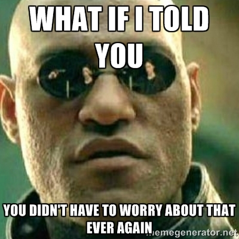

class: center, middle name: opening # What is Hammerspoon? <img src="./images/hammerspoon-logo.png" width="250px" /> --- layout: true <div class="topic-template"><h1>Hammerspoon</h1></div> --- Hammerspoon is a productivity tool for Mac OS X that offers the following features: * Window management (size, location, placement) * Watchers - screen, applications, battery, filesystem, wifi, USB * Hotkey support * Mac style Notifications * Definitions are written in Lua.. such power! --- class: middle, center ## Save yourself time and friction? --- class: middle, center ## Different window layouts for the office or home, on-the-go? --- class: middle, center ## Sick of organising your application windows 'back' to where you want them? --- class: center, middle  --- layout: false class: center, middle # Features --- layout: true <div class="topic-template"><h1>Features</h1></div> --- ## Watchers ## Window management ## Hotkeys ## LUA --- ## Watchers Create callback functions for events such as: * A screen, USB device has been plugged in * The connected WIFI SSID has changed * An application has started up, minimised / hidden or activated * A file / directory on disk has been updated --- ## Window management * Ensure applications are always in the same place * Manually using hotkeys * Automatically using 'layouts' * Move and resize application windows using hotkeys --- ## Hotkeys * Great for moving an resizing application windows * Start a particular application / applications * Bring a particular application to focus * <SUPER> + F focuses Flowdock for me * Force a 'layout' refresh --- ## Written in Lua * Available APIs are many! * Infinite possibilities for customisation! * Hammerspoon user contributed library eco-system? --- layout: false class: center, middle # Practical uses --- layout: true <div class="topic-template"><h1>Practical uses</h1></div> --- * Bind hotkeys to move / resize application windows * Using WIFI SSID and / or monitor identifier, set a 'work' or 'home' setup which: * Move / rezize application windows exactly how you want * Set monitor brightness * Set audio volume * Boss hotkey - minimises all non-work related applications and bring up [hackertyper.net](http://hackertyper.net) --- layout: false class: center, middle # Alternatives --- <div class="alternative"> <img src="./images/sizeup-logo.png" /> <p>SizeUp</p> </div> <div class="alternative"> <img src="./images/shiftit-logo.png" /> <p>ShiftIt</p> </div> <div class="alternative"> <img src="./images/divvy-logo.png" /> <p>Divvy</p> </div> <div class="alternative"> <img src="./images/spectacle-logo.png" /> <p>Spectacle</p> </div> <div class="alternative"> <img src="./images/moom-logo.png" /> <p>Moom</p> </div> <div class="alternative"> <img src="./images/amethyst-logo.png" /> <p>Amethyst</p> </div> --- ## How to get started [hammerspoon.org: Getting started](http://www.hammerspoon.org/go/) [hammerspoon.org: API docs](http://www.hammerspoon.org/docs/index.html) [My setup](https://github.com/ashmckenzie/hammerspoon) or, come and say hello! :) --- layout: false class: center, middle ## Thanks<i class="twa twa-grinning"></i> <!-- ------------------------------------------------------------------------------------------- -->